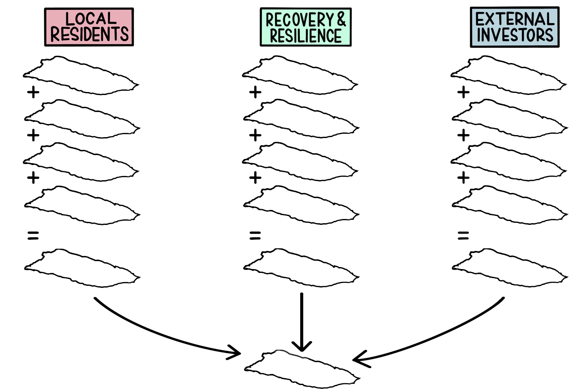
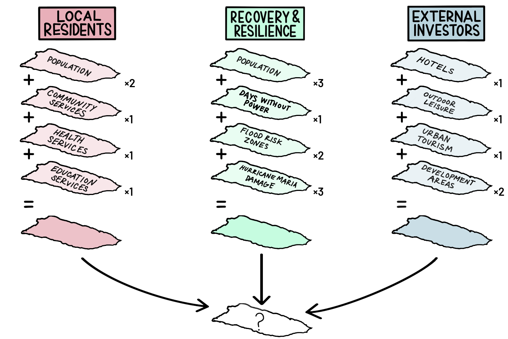

Ashley Louie
Ashley Louie
Conflict Resolution
community agency through mapping
 Puerto Rico
Collaborator Gloria Serra Coch
Puerto Rico Today
Following the aftermath of Hurricane Maria in September 2017, Puerto Rico's electrical grid failed, water systems were inoperable, debris from landslides blocked roads, cellular sites were knocked out, and households were damaged, among the numerous other challenges.1 This natural disaster put Puerto Rico in the spotlight for relief, but the U.S. Territory had already been struggling with a financial crisis as a consequence of its colonial history and limited sovereignty. Home to 3.5 million residents and homeland to 5 million in the diaspora, Puerto Rico surpassed a point of bankruptcy in 2015, accumulating $72 billion in debt, more than its Gross National product (GNP).2 The outstanding debt burden had already burdened Puerto Rico from providing adequate services to its people, with the closure of over 150 schools, increased taxes, laying off public workers, shortage of medical specialists, and increasing emigration, unemployment, and food insecurity.3 Although FEMA plans to provide $2.36 billion dollars in assistance to survivors on the island,4 much of this relief aid is focused on restoring Puerto Rico to the already vulnerable state it was in prior to the hurricane. The aid of post-hurricane recovery resources presents an optimistic opportunity to invest in the future of Puerto Rico.
As disaster funds for Puerto Rico are allocated, how and where funds are distributed reflect the political priorities of those in power. Through its history of colonization, the government authority has been widely distrusted by Puerto Rican communities to distribute funding appropriately. In March 2019, the U.S. Department of Housing and Urban Development announced that they are auditing the funds that were granted to Puerto Rico for hurricane recovery,5 and a local resident noted that “getting access to information here has always been a struggle.”6 With the island’s deep history of resistance to colonization and paranoia of the government, Puerto Ricans have developed a great capacity to locally organize and advocate for their own needs.7 If Puerto Ricans can provide a rational argument that spatializes community priorities and speaks the language of planners, they can proactively advocate for allocation of relief funds.
A Mapping Tool for Advocacy
The decision model can be used as a tool for communities to gain agency in mapping their priorities for improvements. Empowering data literacy and offering mapping tools to the community provides a way for the community to document their values with spatial information and provides a means to communicate concerns to planning “experts”. The ability to document and communicate values allows the community to stake a claim for areas that should be prioritized for improvements.
However, despite the potential for a mapped decision model to illustrate spatial relationships between multiple layers of information, the weighted process can subjectively favor different outcomes. In order to rationalize how best to envision how funds should be allocated for Puerto Rico, it is essential to pose the question: Who will benefit from these planning decisions? A map visualization must be paired with the context of embedded values and assumptions that led to its creation. Although the outcomes have limitations from the data sourced and methodology created, the decision model provides an opportunity for communities to promote their values and to negotiate a way forward.
This decision model aims to achieve the following objectives in Puerto Rico:
- All Puerto Ricans have the right to live in a community with access to adequate resources and basic services.
- All communities should be restored and resilient to future disaster risks.
- Recovery investment should be allocated to provide resources to strengthen the economy.
Conflicting Interests
To demonstrate potentially conflicting stakeholder values, we will explore three perspectives that Puerto Ricans can gravitate towards. Although the narratives are intentionally simplified, the characterization of distinct stakeholders illustrates how differences in priorities can affect final decision outputs and create a number of possibilities for Puerto Rico's future.
Local Residents
Prior to Hurricane Maria, the Puerto Rican government had already been struggling with an overwhelming amount of debt and begun reducing expenses by cutting back public services. Due to Puerto Rico's high poverty rate (an estimated 59% of households generated an income of less than $25,000 in 2017),8 many services are necessary for an struggling families to maintain an adequate quality of life. After Hurricane Maria struck, many Puerto Rican public schools closed and communities continue to receive inadequate funding for services as the government continues to combat the debt crisis.
The average Puerto Rican puts their family first. Women head almost 80% of households in Puerto Rico,9 and often serve as activists within their communities. With female-led family values extending into nurturing neighborhoods, these local community leaders may prioritize equitable access to resources.
Representative Group:
local community leaders, Puerto Rican residents.To the active leaders in local Puerto Rican communities, recovery funding for Hurricane Maria presents an opportunity to invest in services to strengthen the social resilience network that was already lacking prior to Hurricane Maria. The priorities of local residents are visualized by considering the density of community populations are considered relative to areas with longer distances to reach community, health, and education services.
Priorities:
long-term well-being of the community- Provide equitable resources for underserved communities
- Long-term community resilience
- Access to infrastructure services
- Build robust economy
Data Layers Mapped
- Population density
- Community services
- Health services
- Education services
Local Residents Decision Model
Data Sources
- US Census Bureau. “Annual Population Estimates for Puerto Rico and its municipalities,” [vector]. April 2018.
- Humanitarian Data Exchange via OpenStreetMap. “HOTOSM Puerto Rico Buildings,” [vector]. Nov 2018.
- Humanitarian Data Exchange via OpenStreetMap. “HOTOSM Puerto Rico Points of Interest,” [vector]. Nov 2018.
Recovery & Resilience
After Hurricane Maria struck Puerto Rico, many residents were faced with repairing damaged homes and blocked roads and had limited access to basic services like electricity, potable water, and cellular service. The serverity of this natural disaster evoked a sense of urgency for local Puerto Ricans, emigrated Puerto Ricans, and the witnessing nation to send support for recovery through donations, volunteers, and FEMA disaster relief.
Within the greater context of climate change, natural disasters have become more intense and frequent within the last 15 years. Hurricane Maria's destruction revealed that Puerto Rico's power grid, water supply, and communities are highly vulnerable and lacked the ability to recovery quickly from the disaster.
Representative Group:
Puerto Rican middle class, mainland emigrants with close ties to the island, disaster relief aidesMany people involved in Hurricane Maria disaster recovery efforts may prioritize imagining a more resilient Puerto Rico. Resiliency focuses on reducing vulnerability of city-wide systems and reinforcing social connections and resources within a network. To address recovery and resilience interests in Puerto Rico, areas with longer days without power, vulnerable to future flooding, and affected by Hurricane Maria are assessed relative to the population density of communities affected.
Priorities:
recovery and resilience- Ensure the resilience of developed areas
- Recover from Hurricane Maria damage
- Reduce risk from future threats (i.e. hurricanes, flood inundation, landslides, etc.)
Data Layers Mapped
- Population density
- Days without power
- Flood risk zones
- Hurricane Maria damage
Recovery & Resilience Decision Model
Data Sources
- US Census Bureau. “Annual Population Estimates for Puerto Rico and its municipalities,” [vector]. April 2018.
- Humanitarian Data Exchange via OpenStreetMap. “HOTOSM Puerto Rico Buildings,” [vector]. Nov 2018.
- NASA. “Days Without Power,” [raster]. 2018.
- FEMA, Puerto Rico Planning Board. “HECRAS Modesl for the PR Advisory Maps,” [vector]. Feb 2018.
- FEMA. “National Disasters: Hurricane Maria Damage Assessments,” [vector]. Oct 2017. 2017
External Investors
In the wake of disaster, Hurricane Maria also brought optimism that Puerto Rico will be rebuild the island to be in better condition than before the hurricane struck. External investors see Puerto Rico's recovery as an opportunity to finance infrastructure and earn returns on its growth. Because Puerto Rico is a U.S. territory, American citizens can travel to and from Puerto Rico without a visa or passport. Additionally, Puerto Rican legislation from 2012 includes a number of tax loopholes, entices prospective businesses and investors with significantly lower tax rates than the states and only requires residency for 183 days per year.10
With the lure of its tropical climate, beautiful beaches, and easy access for American citizens, Puerto Rico is a desirable location for investors to play a role in the recovery process of the island, while gaining profit along the way.
Representative Group:
real estate speculators, financial investors, and the top 1% of Puerto Ricans that support developmentExternal investors see Puerto Rico is a desirable location to aide recovery of the island, while also gaining profit. If tourist development is prioritized in Puerto Rico, areas with opportunity for development that are near existing hotels, outdoor leisure, and urban and historic destinations would be considered.
Priorities:
attract capital for profitable development, invest in Puerto Rico as a tourist destination- Improve areas with high economic growth potential
- Provide resources to resort and leisure developments
- Beautify tourist destination areas
Data Layers Mapped
- Hotels
- Outdoor leisure
- Urban and historic tourist destinations
- Development areas
External Investors Decision Model
Data Sources
- Google Maps. “Hotels in Puerto Rico,” [vector]. Accessed Apr 2019.
- Discover Puerto Rico. “Activities and Experiences: Beaches & Water Sports, Casinos, Culture, Golf, Luxury, Museums, Nightlife, Outdoors, Shopping,” [vector] Accessed Apr 2019.
- Planning Board, Office of the Governor, Commonwealth of Puerto Rico. “Map of land classification under the Land Use Plan” [vector] Dec 2015, updated Oct 2017.
Weighting Stakeholder Values
Each map of Puerto Rico shows a range of shades, in which darker values represent areas that should be prioritized for allocated resources. The Local Residents map distributes fairly evenly, with concentration around areas that are more populous, indicating that much of the island is in need of improved resources. The Recovery & Resilience map shows darker areas along the Eastern side of the island, reflecting the areas that received greater damage from the hurricane and communities that are less resilient to responding to the disaster. The External Investors map highlights coastal areas and urban centers, reflecting clusters of tourist destinations and potential for real estate development. The three maps illustrate very different pictures of how relief funds might be distributed, based on the values and data layers that were considered to be included in each visualization.
If representatives from each group advocated for their own priorities with these visualizations, a number of outcomes could be produced by combining the data in a decision model.
If each are represented equally, coastal and urban areas would be highly prioritized, including the urban areas in San Juan and El Ponce, while a number of central municipalities, such as northern Utado, Ciales and southern Coamo, would would be ranked as a moderate priority. If Local Residents, Recovery, and resilience were prioritized, priorities for funding would be distributed along the hurricane damage on the eastern side of the island and to improve resources in communities most in need. Conversely, if the Local Residents had a smaller voice in negotiation, and Recovery, Resilience, and External Investor values were prioritized, resources might be allocated along the coastal areas which serve as tourist destinations and are prone to future flooding.
Weighted Decision Model
Potential for Conflict Resolution
Breaking down the mapped decision model allows us to compare the different areas that might be prioritized in each scenario, and to understand how including, excluding, and weighting different data sets can produce widely different conclusions. Being able to collectively visualize the possible futures of Puerto Rico can be a starting point for conversation and negotiation in community planning discussions.
For further information, refer to the Conflict Resolution project and additional student research projects on Conflict Urbanism Puerto Rico Now for through the Columbia University Center for Spatial Research, led by Laura Kurgan and Frances Negron-Muntaner.
References
- “Hurricane Maria.” FEMA, U.S. Department of Homeland Security. March 14, 2019. [link].
- Bannan, Natasha L. Puerto Rico’s Odious Debt: The Economic Crisis of Colonialism, 19 CUNY L. Rev. 287 (2016). [link].
- Bannan, Natasha L.
- “Hurricane Maria.”
- Wiscovitch, Jeniffer. “HUD's Inspector General is Auditing Part of the Disaster Funds for Puerto Rico.” Centro de Periodismo Investigativo. March 28, 2019. [link].
- Florido, Adrian. “Puerto Ricans Want Their Government To Be More Transparent.” National Public Radio, Inc. November 19, 2018. [link].
- Laughland, Oliver. “‘I'm not fatalistic’: Naomi Klein on Puerto Rico, austerity and the left.” The Guardian. Aug 8, 2018. [link].
- United States Census Bureau. “ACS 2017 (5-Year Estimates),” Social Explorer. Sep 2016. [link].
- United States Census Bureau.
- “Why now is the perfect time to invest in Puerto Rico.” lifeafar Investments. 2019 [link].